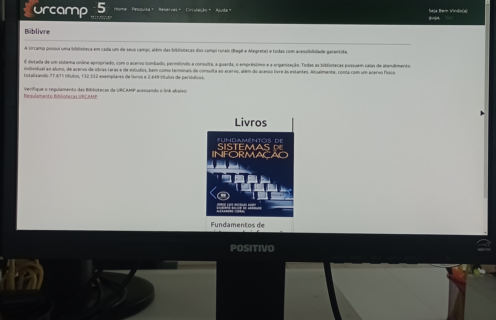

URCAMP
Onde deixei de estudar código e comecei a responder por ele.
Onde deixei de estudar código e comecei a responder por ele.
Meu primeiro contato não foi com um projeto novo. Foi com sistemas vivos, usados todos os dias. Ali entendi que código em produção exige respeito.
Trabalhar com PHP na URCAMP me ensinou algo simples e pouco falado: mexer no que já funciona é mais difícil do que criar algo do zero.
Não são apenas tecnologias — são meios para garantir estabilidade, clareza e responsabilidade em sistemas já em produção.
“Antes de escrever código, aprendi a assumir consequências.”